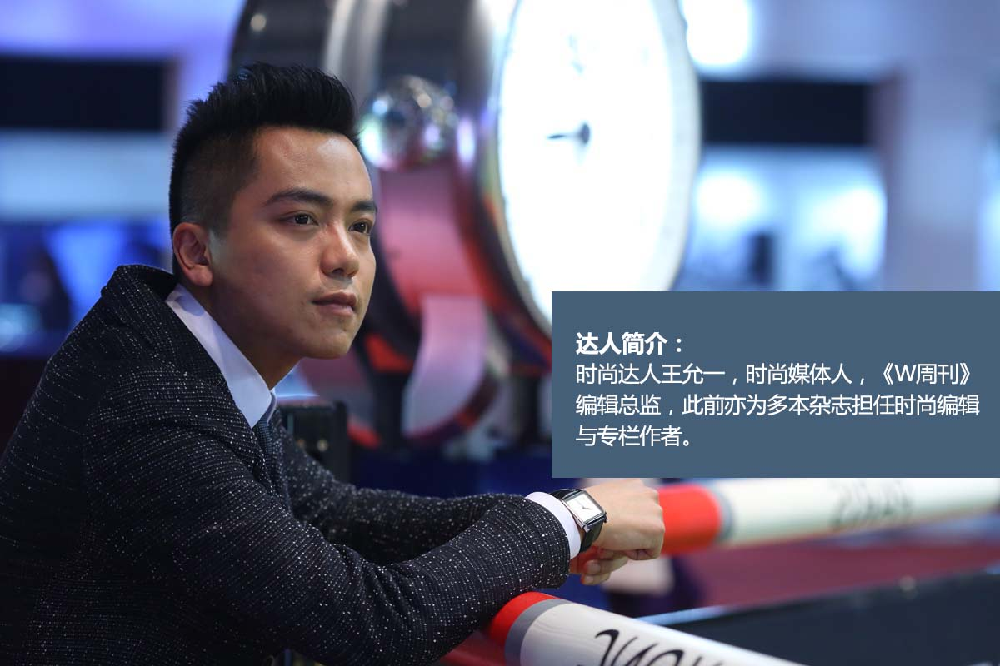
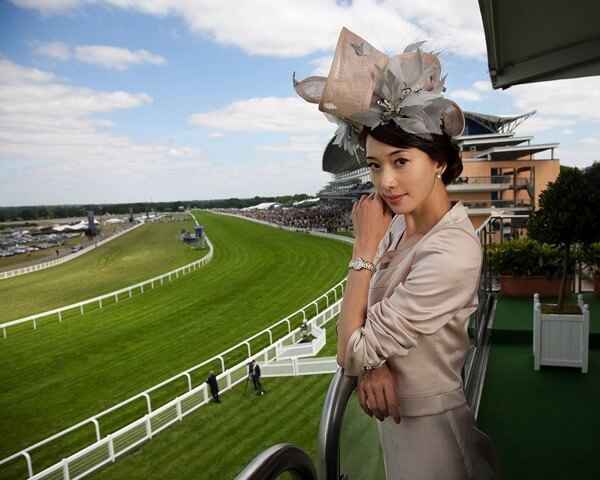
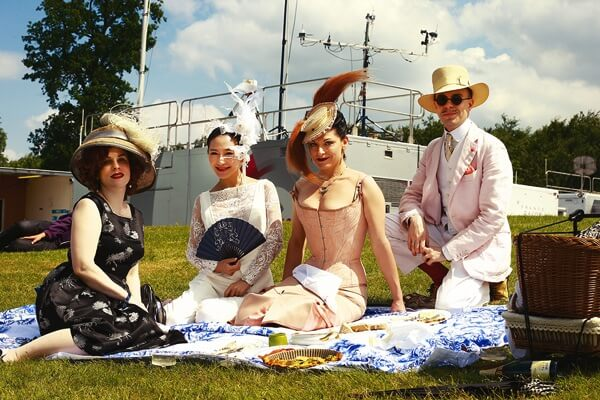
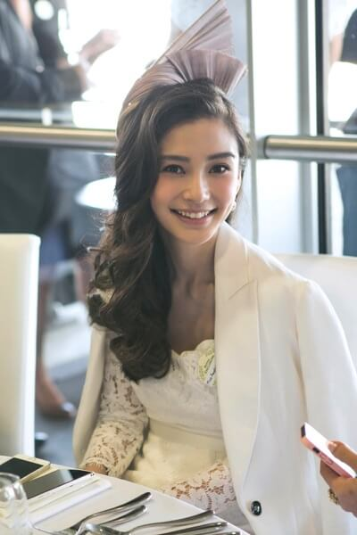

马术“穿”上身
在西方，马术被誉为贵族运动，其着装礼仪可能是所有运动中最为讲究的。现如今，马术也已在国内迅速普及，如果在观赛过程中还对马术背后的着装礼仪一知半解，那你可就OUT啦。趁着浪琴表香港马术大师赛的机会，我们不如将马术“穿”上身，一起来聊聊马术障碍赛与平地赛马中的着装奥秘吧！
马术障碍赛骑手装束：英姿飒爽，崇尚简便
在马术场地障碍赛中，骑手的服饰起源于猎装，以简便为第一诉求。男女骑手统一穿着红色或黑色的西装外套，虽少了丰富斑斓的色彩，但突出了简单便捷的功能性需求。骑手须戴上黑色圆顶头盔，穿起白色衬衫，并搭配白色领带和深色手套，这不仅有利于跳跃动作的轻盈流畅，更打造出潇洒俊朗的骑士英姿。
平地赛马骑手装束：夺目亮彩，点燃激情
在平地赛马比赛中，骑师会穿着专属的服装。他们的上衣和骑师帽保持颜色一致，多见黄色、蓝色、灰色等，而其身上的图案则有菱形、圆点、星形、条纹或者对角交叉线等众多选择。当然，出于赛事安全的考虑，骑师还必须穿戴马裤、长马靴、护目镜和手套等装备。平地赛马运动强调骑师与赛马的醒目和与众不同，以便观众在比赛过程中迅速锁定自己看好的马匹，并始终保持全情投入的观赛状态。
马赛观众衣着小贴士：低调端庄，兼具时尚
在马术障碍赛和平地赛马比赛中，不仅骑手装束受到严格规范，观众的着装也是显示个人修养和时尚品味的一道亮丽风景线。
在观赛席间，女士们大多会选择优雅的套装或者长宽的礼服。而过于性感随意的吊带裙和热裤，则会被视为一种不礼貌的行为。
男士则大多穿着深色日间正装和皮鞋。绅士们更会搭配一款同色系小礼帽，而礼帽在历史悠久的英国皇家阿斯科特赛马会中更是男士观众的必备装束。该项比赛也是世界上对着装礼仪要求最高的马术比赛之一。
当然，如果你愿意选择一条颜色亮眼的领带来搭配深色西装，这会让你的整体造型多出几分时尚感，在满满的绅士风度中更添一分迷人与优雅。

马赛观众冒饰小贴士：贵族守则，个性舞台
对于女士观众而言，在平地赛马运动中，还有一项最为重要的观赛着装规范，那就是佩戴礼帽。早期的马赛主要由社会精英与富裕阶层参与，观众严格遵循着包括佩戴礼帽在内的贵族着装守则。到二十世纪初时，尽管礼帽一度与主流时尚趋势渐行渐远，但赛马观众却始终坚持将一顶精美绝伦的礼帽作为财富与社会地位的象征。直到现在，帽饰已逐渐成为在公共空间中展现个性魅力的独特舞台。
驰骋绿茵的良驹是马术运动中当仁不让的主角，而争奇斗艳的女士帽饰则是赛场边一道迤逦迷人的风景线。各式帽子和头饰除与礼服呼应搭配之外，设计感和细节都在显示自己的与众不同。平日里充满戏剧感的帽子，在赛马场上非但不显突兀，反而彰显出个性与时髦的态度。
纵览马术运动中传承已久的着装规范，不难发现，如果充满激情与奇迹的马场是拥有无限可能的创意空间，那么悉心打造的华丽帽饰便是潮流风向的精致缩影。